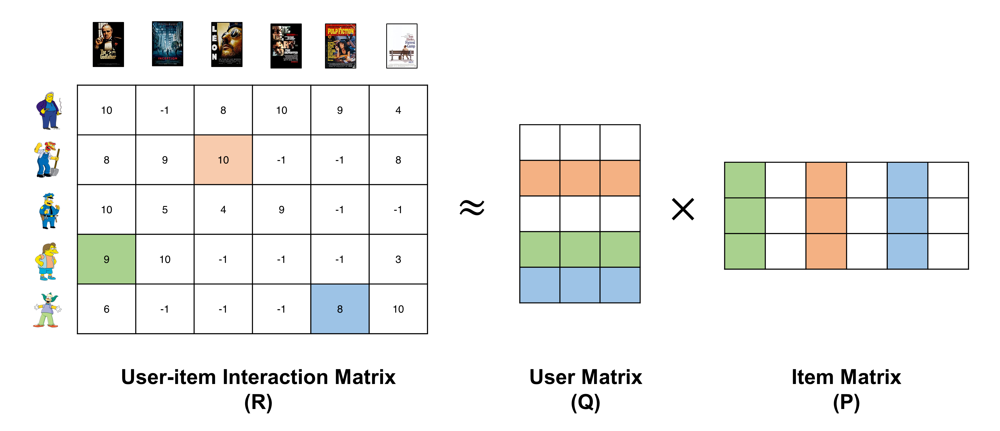

Matrix factorization, also known as matrix decomposition, is a way of breaking down a matrix into constituent elements, making it easier to calculate more complex matrix operations. The factoring of integers, such as factoring 24 into 6 x 4, is a common analogy for matrix decomposition or factorization.
These methods are the cornerstone of linear algebra in computers, even for basic tasks like solving systems of linear equations, computing the inverse, and computing the determinant of a matrix.
Matrix decomposition has a wide range of applications in machine learning, ranging from lowering the computational cost of operations on large matrices to recommender systems used by companies like Amazon, Netflix, UberEats, and Youtube.
Image from Unsplash
In the context of recommender systems, it is a type of collaborative filtering technique used to find similarities in a user's previous behavior and generate predictions based on other users' preferences. It operates by breaking down the user-item interaction matrix into two lower-dimensional rectangular matrices, namely the user matrix and the item matrix.

Image from Codinfox
There are numerous matrix decompositions, each with a unique set of properties that are beneficial for a specific task. Two basic and commonly used matrix decomposition methods are LU decomposition and QR decomposition.
LU Decomposition
The LU abbreviation stands for lower–upper decomposition. It decomposes a matrix into two parts: L and U where L is a lower triangular matrix and U is an upper triangular matrix.
The LU decomposition is applied to square matrices using an iterative numerical procedure but it can fail for non-decomposable matrices thus, the product LU sometimes contains a permutation matrix to stabilize the results. It is frequently used to simplify the solution of systems of linear equations, such as computing the determinant and inverse of a matrix or finding the coefficients in linear regression.
In Python, we use lu() from scipy.linalg to implement the LU decomposition. This function, in particular, computes a PLU decomposition.
QR Decomposition
The QR decomposition splits a matrix into Q and R components, with Q being an orthogonal matrix and R being an upper triangular matrix. Unlike LU decomposition, QR decomposition may be used for any m x n matrix and is not confined to square matrices.
The QR decomposition is widely used to solve the systems of linear equations, linear least squares problems and linear regression algorithms. The R programming language's lm() function, for example, utilizes QR decomposition to determine the coefficients of independent variables.
In Python, we use the qr() function in NumPy to implement the QR decomposition. The function by default reduces the dimensions of returned Q and R matrices to make future operations efficient. By providing the mode option as ‘complete,' we can get the anticipated sizes of m x m for Q and m x n for R.
References
A Gentle Introduction to Matrix Factorization for Machine Learning
Wikipedia: Matrix decomposition
Recommender System — Matrix Factorization
Last Updated on July 25, 2021